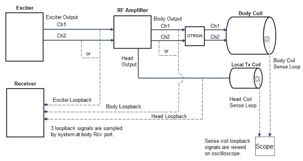

- 00000018WIA30CF3E20GYZ
- id_131059273.16
- Jul 28, 2025 4:52:00 PM
Radio Frequency Analysis (RFA) Loopback test theory
Get an introduction to the Radio Frequency Analysis (RFA) Loopback tests done using the RFA tool, and the analyses of the RFA plots.
Simplified Loopback diagram (dual-drive RF amplifier systems)
The following illustration shows a simplified diagram for the Loopback tests done using the Radio Frequency Analysis (RFA) tool.
The system uses dual drive RF for body mode. The RF amplifier has two power outputs (15 kW each): channel 1 (previously known as I-channel) and channel 2 (previously known as Q-channel). These two channels provide output to the body coil through the Dual Drive Transmit Receive Switch (DTRSW). (In earlier MR systems, a single RF body output of 35 kW was used to drive the body coil. The single output was split at the body hybrid.)
The RFA Loopback test can be used to troubleshoot phase and magnitude differences, phase and magnitude stability issues, and fidelity issues that can occur in the dual drive RF output. The FE can select the desired RF pulse type, as shown in Analyses done by RFA tool, to look for magnitude and phase differences between the channels and individual channel stability or linearity issues.
The exciter outputs provide the channel 1 and channel 2 inputs to the dual drive RF amplifier. The head RF output from the dual drive amplifier is the same as in previous systems.

The RFA tool does the analyses described in the following table. The analyses done depend on the type of RF pulses being tested.
| For these types of RF pulses: | These analyses are done: |
|---|---|
| Standard | Inter-Pulse Magnitude Stability (Peak Mag & Integral) |
| Inter-Pulse 0th-Order Phase Stability | |
| Inter-Pulse 1st-Order Phase Stability | |
| Exp (Ascending) OR Exp (Descending) | Intra-Pulse Magnitude Linearity |
| Intra-Pulse Phase Linearity |
Plots are generated when running the RFA Loopback test.
RFA inter-pulse magnitude stability analysis (standard pulse type)
This analysis quantifies how both the Peak Magnitude and the Magnitude Integral (the sum of all sample magnitudes) of the RF inversion pulses in a fast spin echo (FSE) sequence varies over the entire scan.
The RFA "standard pulse" scan generates a rawfile that would normally contain MR echoes or "K-space" data for each slice. However, the RFA tool's pulse sequence database (PSD) (built from product FSE) slides each data acquisition window approximately TE/2 msec earlier in time and samples all the RF2 inversion pulses. Each line of each slice in the rawfile then contains the complex samples of the one inversion pulse that precedes the MR echo signal that would normally be stored there.
The data in the rawfile is normally stored in recon or "Ky" order, but the RFA tool analysis reorders the data so each slice's inversion pulses are in the order they were played out [all echo train length (ETL) inversion pulses of the first echo train, all ETL inversion pulses of the second echo train, and so on].
The total number of RF inversion pulses acquired per slice is "echo train length" * "number of trains(shots)" which equals the RFA protocol's phase matrix size. The total number of RF inversion pulses acquired for the scan is the total per slice times the number of slices.
The horizontal axis in both the Peak Magnitude and Integrated Area plots is the RF pulse index or "view" index (applicable to each slice) and ranges from 1 to the phase matrix size. The plots for each slice are overlaid on top of each other in time order, with the first slice in time in blue and the last slice in time in red, with those in between shaded gradually from blue to red. After the plots for each slice are overlaid, they are normalized to place the highest overall point at 100%.
If the transmit chain had perfect inter-pulse magnitude stability, we would see only one horizontal red line along the very top of both the Peak Magnitude and Integral Area displays. These overlaid plot presentations allow you to "see" periodic instabilities that are common to each slice and possibly linked to a particular echo train or echo. The color-coding of plots by slice from blue to red allows assessment of instabilities across a single TR as well (the first ETL points of each slice's plot are acquired before the next ETL points of any slice's plot are acquired).
RFA inter-pulse phase stability (standard pulse type)
This analysis quantifies how both the 0th order phase (that is, the average phase, or the constant phase) in degrees and the 1st order phase (phase slope or linear phase) in degrees/point of the RF inversion pulses vary during the scan.
The RFA standard mode scan generates a rawfile that would normally contain MR echoes or "K-space" data for each slice. However, the RFA tool's PSD (built from product FSE) slides each data acquisition window approximately TE/2 msec earlier in time and samples all the RF2 inversion pulses. Each line of each slice in the rawfile then contains the complex samples of the one inversion pulse that normally precedes the MR echo signal that would normally be stored there.
The data in the rawfile is normally stored in recon or "Ky" order, but the RFA tool analysis reorders the data so each slice's inversion pulses are in the order they were played out (all ETL inversion pulses of the first echo train, all ETL inversion pulses of the second echo train, and so on). The total number of RF inversion pulses acquired per slice is "echo train length" * "number of trains(shots)" which equals the protocol's phase matrix size. The total number of RF inversion pulses acquired for the scan is the total per slice times the number of slices. The 0th order phase in degrees is calculated by focusing on a central percentage of the RF inversion pulse's width, unwrapping (symmetrically about the pulse's center) any phase wraps, fitting a straight line to the unwrapped phase, and extracting the 0th order coefficient. This is done the same way for every RF pulse sampled. The average of all 0th order phase points is then subtracted from every point. The 0th order phase plots for each slice are overlaid on top of each other in time order, with the first slice in time in blue and the last slice in red, with those in between shaded gradually from blue to red. This overlaid plot presentation allows you to "see" periodic instabilities that are common to each slice and possibly linked to a particular echo train or echo. If the transmit chain had perfect inter-pulse 0th order phase stability, we would see only a thin red horizontal line along the very center of the display. The horizontal axis for the 0th order phase plot is the RF inversion pulse index (applicable to each slice) and ranges from 1 to the phase matrix size. The vertical axis is in degrees.
The 1st order phase in "degrees/point" is calculated as above except the 1st order term of the line fit is extracted. This is done the same way for every RF pulse sampled. The plots for each slice are overlaid on top of each other in time order, with the first slice in time in blue and the last slice in red, with those in between shaded from blue to red. This overlaid plot presentation allows us to "see" periodic instabilities that are common to each slice and possibly linked to a particular echo train or echo. If the transmit chain had perfect inter-pulse 1st order phase stability, we would see only one horizontal red line along the very center of the display. The horizontal axis for the 1st order phase plot is the RF inversion pulse index or "view" index (applicable to each slice) and ranges from 1 to the phase matrix size. The vertical axis is in "degrees/point".
RFA intra-pulse magnitude linearity analysis (exponential pulse type)
This analysis quantifies the transmit chain's ability to reproduce the transmit pulse's magnitude variation within a pulse duration. This analysis is not directed at the stability from pulse to pulse, but rather the intra-pulse magnitude linearity: the fidelity of the transmit chain.
The analysis quantifies the transmit chain's intra-pulse magnitude linearity over the operating dynamic range. The RFA PSD plays out a fast spin echo (FSE) sequence similar to the standard pulse type option, except all the RF2 inversion or "sinc" type pulses are replaced with exponential pulses of the same pulse width (approximately 2 to 3 ms). The RFA tool analyzes the magnitude of the "looped back" and sampled pulse shape.
A number of sampled pulses are averaged to improve the signal-to-noise ratio and obtain a "characteristic" pulse shape. To this end, only the 1st RF pulse from the 3rd through last echo trains of slice 1 are averaged. Starting and ending points within the "averaged" pulse are calculated and define the portion upon which further calculations focus. The analysis takes the log of the averaged pulse magnitude. If the transmit chain faithfully reproduced the pure exponential pulse shape, the result would be a straight line. We then fit a straight line to the log data and take the anti-log of the line fit. Ideally, the anti-log curve would coincide with the original averaged exponential pulse. We compare the anti-log curve with the original averaged curve and report the magnitude difference between them in units of % difference {100*[sampled-antilog(fit)] /antilog(fit)} and units of decibels (dB).
If the horizontal axis of the plot ranges from 0 to approximately 100 to 200, it represents the "sample index" of the analyzed portion of the input pulse where time progresses from left to right. If the horizontal axis of the plot ranges from approximately -35 to 0, it represents the output range in dB of that section of the transmit chain with 0 dB corresponding to full-scale output. See Plot key for RFA intra-pulse magnitude linearity analyses for a more detailed explanation of plot content.
| P | Y-axis label | X-axis label | Curve description |
|---|---|---|---|
| 1 | Mag & fit | Sample Index | Blue points are sampled, averaged data. Red points are fit to data. |
| 2 | Mag err(%) | Sample Index | Blue points are magnitude error (in dB) between data (blue points plot 1) and fit (red points plot 1). Red points are curve fit to blue points. |
| 3 | Mag err(dB) | Sample Index | Blue points are magnitude error (in dB) between data (blue points plot 1) and fit (red points plot 1). Red points are curve fit to blue points. |
| 4 | Mag err(%) | dB(=20*log[norm input pulse in plot 1]) | Blue points are magnitude error (in %) between data (blue points plot 1) and fit (red points plot 1). Red points are curve fit to blue points. |
| 5 | Mag err(dB) | dB | Blue points are magnitude error (in dB) between data (blue points plot 1) and fit (red points plot 1). Red points are curve fit to blue points. |
| 6 | Mag err DIF(dB/dB) | dB | Blue points are differential (derivative) of red points in plot 5. This plot assesses how much the magnitude error is changing per dB of input level with respect to full scale. |
RFA intra-pulse phase linearity analysis (exponential pulse type)
This analysis quantifies the transmit chain's ability to maintain the constant (flat) phase requested at its input within a pulse duration.
This analysis is not directed at the phase stability from pulse to pulse, but rather the intra-pulse phase linearity (flatness). The analysis quantifies the transmit chain's Intra-pulse phase linearity over the transmit chain's operating dynamic range. The RFA PSD plays out a fast spin echo (FSE) sequence similar to the standard pulse type option, except all the standard RF2 inversion or "sinc" type pulses are replaced with exponential pulses of the same pulse width (approximately 2 to 3 ms) that have no phase change (flat phase) over the pulse duration. The tool analyzes the phase of the "looped back" and sampled pulse. A number of sampled pulses are averaged to improve the signal-to-noise ratio and obtain a "characteristic" pulse phase. To this end, only the 1st RF pulse from the 3rd through last echo trains of slice 1 are averaged. Starting and ending points within the "average" pulse are calculated and define the portion upon which further calculations focus. The analysis fits a straight line to the averaged pulse phase. Ideally, the fitted line has a slope of zero, demonstrating no deviation between the pulse phase and the fit line. If the horizontal axis ranges from 0 to approximately 100 to 200, it represents the "sample index" of the analyzed portion of the input pulse where time progresses from left to right. If the horizontal axis ranges from approximately -35 to 0, it represents the output range in dB of that section of the transmit chain with 0 dB corresponding to full-scale output. See Plot key for RFA intra-pulse phase linearity analyses for a more detailed explanation of plot content.
| P | Y-axis label | X-axis label | Curve description |
|---|---|---|---|
| 1 | phase (deg) | Sample Index | If FSE sequence has N shots (echo trains), there are N-2 plots here. The 1st plot in time (blue) is the phase of the 1st exponential pulse in echo train 3. The last plot in time (red) is the phase of the 1st exponential pulse in echo train N. The plots gradually change from blue to red as time progresses. |
| 2 | phase (deg, blue) | Sample Index | Blue points are the pulse phase (the average of the N-2 plots in plot 1). |
| 3 | phase err (deg, blue) & fit (red) | Sample Index | Blue points are those in plot 2 but with the overall average value subtracted (blue points have zero average phase). Red points are curve fit to blue points. |
| 4 | phase err (deg) | dB(=20*log[norm input pulse in plot 1]) | Blue points are the pulse phase with overall average phase subtracted. Red points are curve fit to blue points. |
| 5 | phase err DIF (deg/dB) | dB | Blue points are the differential (derivative) of the red points in plot 4. This plot assesses how much the phase error is changing per dB of input level with respect to full scale. |
RFA tool pass/fail specifications
If any RFA plot has one or more pass/fail specifications applied to aspects of its displayed data, the plot will have a small color-coded rectangular field of spec information. If the rectangle has a red background, one or more of the specs applicable to that plot has failed. If the rectangle has a green background, all the specs applicable to that plot have passed. Within each rectangle the plot specific spec information is given in the following format:
{param} ({plot_axis}:{range})= {value} Result: state Spec = {spec_val}
| param | The parameter or aspect of the data to which the spec is applied. Examples are the min (minimum), max (maximum), mean, stdev (standard deviation), p2p (peak-to-peak), and so on. |
| plot_axis | Most likely X, meaning the abscissa or horizontal axis. |
| range | The plot_axis range over which the "param" is being assessed for this particular specification. |
| value | The actual "param" value found within the specified range. |
| state | The state of the spec comparison (PASS or FAIL). |
| spec_val | The actual numerical value limit that defines the specification. |
The result is FAIL if the param has a value that lies outside the boundary given by the spec_val.
Displaying existing RFA plot files
RFA plot files (JPEG format, stored in dir /usr/g/service/cclass/RFA_tool) have the following name form:
|
For this pulse type: |
The plot file names have the form: |
|
Standard |
P[#].7.RFA.[loopbackmode].[plot].jpg |
|
Exponential |
P[#].7.RFA.[loopbackmode].[1,2].[plot].jpg |
|
where the [loopbackmode] field is one of the following:
| |
|
and the [plot] field is one of the following:
| |
To show an existing plot:
- Open a C-shell.
- Type cd /usr/g/servicecclas/RFA_tool and then press Enter.
- Type ls –l *RFA*jpg and then press Enter.
- Type xview jpgfilename and then press Enter. (Example: xview P01024.7.RFA.tps-fse.mag.jpg.)